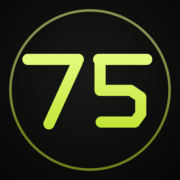

Seventy-five days. Six commitments. Miss one and you start again from zero — and this app will be the one to tell you.
Open the app Free · no account · everything stays on your phoneWorkouts and reading can't be checked off until a photo is attached. Honesty by design.
Point the camera at any barcode — calories and macros land in your log. A built-in library and web search cover everything else.
Log something that breaks your Keto, Paleo, or Vegan plan and the app catches it — with a better swap.
Bound together — if one of you misses a day, you both restart. Trade day codes over iMessage.
Daily progress pictures become a before/after and a full time-lapse reel at day 75.
Your “why” shown daily, a don't-break-the-chain streak, milestones, weekly reflections, a nightly journal.
“Seventy-five means seventy-five. It starts again — and that's not failure, it's practice.”